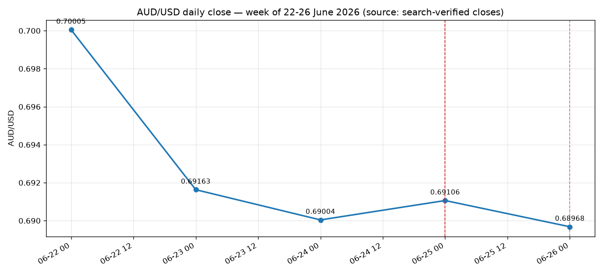

Week: 0.70005 → 0.68968 (-104 pips, -1.48%) — lowest weekly close in ~3 months.

| Date | Close | Δ pips | What moved it |
|---|---|---|---|
| Mon 22 Jun | 0.70005 | Week open | |
| Tue 23 Jun | 0.69163 | -84 | Biggest daily drop - USD strength on Fed repricing |
| Wed 24 Jun | 0.69004 | -16 | Downtrend continues |
| Thu 25 Jun | 0.69106 | +10 | Small bounce; US jobless claims 215K (strong) but AUD steadied |
| Fri 26 Jun | 0.68968 | -14 | Lowest weekly close in 3 months; -1.70% on week |
| When (UTC) | Ccy | Event | Actual | Forecast |
|---|---|---|---|---|
| Thu 25 Jun 12:30 | USD | Final Q1 GDP (annualized) | 1.6% | |
| Thu 25 Jun 12:30 | USD | Initial Jobless Claims | 215K | 225K |
| Thu 25 Jun 12:30 | USD | Core PCE Price Index (May) | 2.6% y/y | |
| Fri 26 Jun 00:00 | USD | FOMC hawkish repricing (Warsh) - USD to 13-month high | ||
| Tue 30 Jun 01:30 | AUD | RBA June meeting minutes |
Daily closes are search-verified end-of-day values. For a true per-second breakdown of exactly where each leg happened intraday, run forex_backtest.py on a machine with open network access to the Dukascopy tick feed.